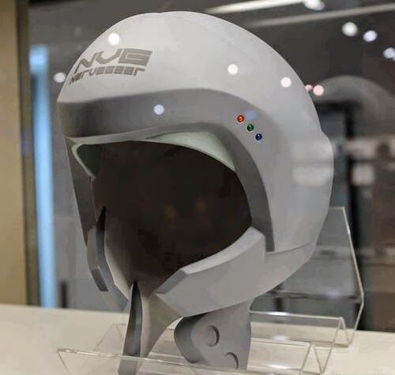

Mi Historia;
Nacido el 11 de Octubre de 1999, en una pequena ciudad al su del estado de Veracruz,México coonocida como Coatzacoalcos (Lugar donde se esconde la Serpiente Emplumada), a la edad de 5 años se empezo a notar en el su entusiamo por los negocios y el entretenimiento lo que mayor le geneba interes eran las nuevas tecnologias computacionales de la epoca pero sobre estaban los videojuegos,desde muy temprana edad tuvo un acercamiento bastante directo,todo empezo con su hermano mayor ,actualmenete segundo mayor socio de R.A.S.C ,gracias a que su hermano se volvio un aficionado de los sistemas computacionales solo por diversion , le otorgo ese gusto implicito mas alla que solo por dinero en la programacion de sistemas,al cumplir 20 años tomo una gran desicion ir a vivir solo a la CDMX, aunque su familia no estba de acuedo el ya tenia en mente su mayor proyecto pero necesitaba mas conocimienitos,consigui un departamento a un precio muy acesible en la alcaldia Azcapotzalco, lugar que se volveria sebe de la primera oficina de R.A.S.C en 2025 , empezo sus estudios universitarios en la Univerdidad Autonoma Metrpolitana Sede Cuajimalpa , a mitad de carrea de programacion de sistemas ,pudo desarrolar su primer gran avance del Nāvugia que queria ser el primer dispositivo de inmersion total en un juego mediante un caso de realidad virtual ,pero aun asi no lograba que funcionara totalmente ya que su sueño, es que al sumergirnos en este dispositivo fuera los mas apegado en la realidad ,con posibilidades de sentir dolor , calor y aromas. No fue hasta el 2025 en la que tuvo la oportunidad de ir a trabajar a Ubisoft Montreal por una pasantia de 2 años en la cual aprendio el desarrolo de videojuegos desde 0 y como afrecerle al usuario una mayor fidelidad en cuanto detalles y mejorar los detalles tecnicos de las mecanicas en ellos para asinpoder ofrecer experiencias en las cual las desiciones afectaran cada paso y accion del jugador generara en tiempo real caminbos en la historia y como su personaje totalmente personalizable afecta todo su entorno tan , solo de 2 años de pasantia se le ofrecio la oportunidad de trabajar de desarrolador dedicado para Ubisoft Montreal en ese año pertenecio al apartado de diseño grafico y mecanicas utilizando el motor grafico mas actual que era unreal engine 5, tras 2 años decidio separarse de la empresa por diferencias creativas ya que habia pasado a ser el desarrolador de mas renombre e inovaciones de la epoca, con otros miembros y con el finacamineto de su capital y el de su hermano fundadon R.A.S.C , tras solo 4 años y con los avances en neurociencia y los avances en los VR pudo loggra su mayor logro lo que hoy conocemos como NerveGear.

Caracteristicas del NerveGear

La estructura de este dispositivo cubre casi la totalidad de la cabeza del usuario y parte del rostro. En su interior hay diversos componentes sinápticos que sirven como mecanismo para acceder al cerebro del usuario y de esta forma tener control sobre sus cinco sentidos. Luego de que el usuario se ha colocado el NerveGear y ajustado correctamente, basta con decir la frase "Iniciar Enlace" para que el dispositivo aísle completamente al individuo del mundo real y tome control sobre las señales que fluyen en el cerebro. El dispositivo cuenta con control a través de ondas cerebrales, puesto que la energía electromagnética produzca una calibración por la cual el cerebro interprete las interacciones humanas y también la de los 5 sentidos (tacto, vista, gusto, olfato y oído). El NerveGear posee unas características por las cuales el cerebro es la proyección de movimientos neuronales que son trasmitidos desde el sistema nervioso, no obstante, se desconecte el NerveGear y la interacción neural sea omitida para así permitir volver a la realidad o dejar de estar en el juego. Este dispositvo revoluciono totalmenmte la vida humana se empezaron a impartir asesorias sobre como desarollar video juegos en el NerveGear e incluso se implemento en otros campos , independientemente de los entretenimiento como la medicina para estudiar la actividad cerebral en paciente en situación de Coma